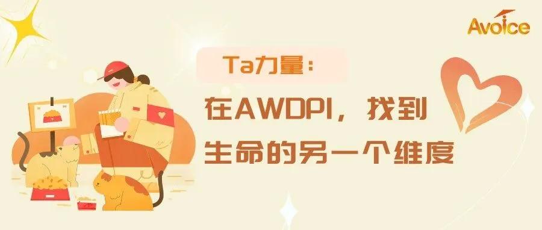
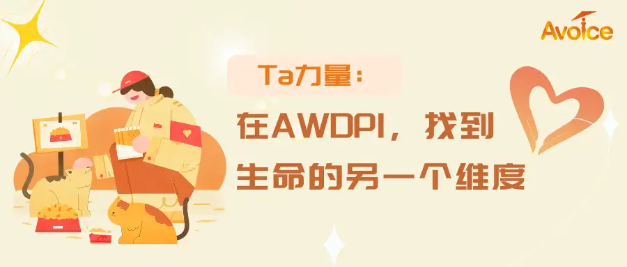
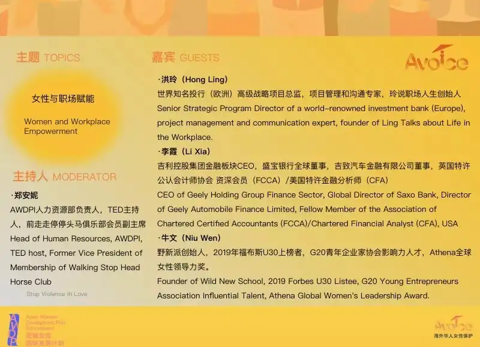
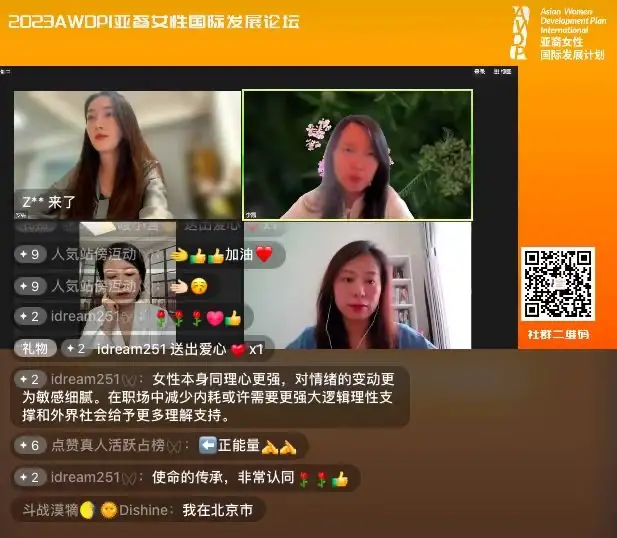

来吧！
一场从零到一的旅程
01
For Asian Women Development
安妮 AWDPI人力资源部负责人
安妮喜欢研究哲学和宗教，喜欢音乐。她说话的语速很快，每句话末尾的语调总是上扬。在这场交流的开头，安妮告诉我们，她非常喜欢“与人发生深度链接”。
这样的安妮遇到了尚在萌芽的AWDPI。
2021年5月，大学就读于HR专业的安妮，出于对公益活动的一腔热情，开始在刚起步的AWDPI工作。
在一个组织的发展初期，许多从零到一的工作亟须进行。安妮和团队要做的第一步，就是从暂时空白的组织架构开始，尝试构建出属于AWDPI的组织结构。“商业组织当中的一些工作结构或者是架构方式，在我们公益组织这边并不一定能完全迁移过来。”安妮告诉我们，“两种组织所面临的挑战和困难其实不是那么一致。”
初期的安妮和团队参照一般商业组织架构，设置了全部的六个模块的小团队。但面对后来运转过程中出现的新情况，安妮和团队选择及时地思考，逐渐地调整，最终将人力资源部建设成为适应AWDPI自身发展的组织结构。
如今的人力资源部包括招募、培训、绩效考核以及员工关系四个团队。四个团队共同为 AWDPI 的选人、用人以及留人的全流程提供支持和赋能。“这个其实还蛮特别，可能一般 HR 部门要么就是六大模块，要么像有些公司是人力资源三支柱这样的一种方式。”安妮说。
这样的思考和调整没有结束。去年开始，安妮和团队着手进行对工作流程的线上化、数字化调整。
安妮回忆起她刚来到AWDPI时，所有的招募信息都需要手动操作。“包括手动通过Excel 表进行我们整个招募的一个进度跟进，以及跟各个部门负责人之间的这种沟通。”但这样的工作流程无疑会使组织成员在处理工作的过程中花费一些无谓的时间和精力。
于是，AWDPI线上化、数字化的工作模式开始搭建。
“我们逐步去使用飞书平台，多维表格等线上化的处理工具，包括今年我们也结合在实际运用的过程中遇到的问题，去调整了一些模式跟流程。”
02
Stop violence in Love
我们是组织的大管家
在每年人力资源部做招募时，安妮总喜欢问一个问题——为什么要加入我们。通常，她得到的回答是，因为我特别希望能够去帮助那些需要帮助的群体。然而在安妮看来，作为HR的工作没办法非常直接地带来这样的感受。
相对于其他一线部门，HR的大部分工作聚焦在部门内。“对于我们真正帮助的受助群体，其实我们的感知不会那么强烈。”安妮说。
但与此同时，与HR工作紧紧联系着的，是来自另一个群体的强烈感知。“我一直跟我们团队小伙伴说，我们 HR 部门是第一个被接触到的。不管有没有加入进来，所有的志愿者第一个去打交道的是我们。所以HR部门在这个层面上，它影响我们候选者怎样去感知我们的组织。”
对于人力资源部的HR们来说，帮助往往以一种“间接”的模式展开：通过赋能组织的志愿者，包括能够直接接触到受助群体的心理支持处、法律咨询处等一线部门志愿者；或是发掘优秀的志愿者，让他们能够更好地在组织当中帮助到受助群体。“一个组织的大管家。”安妮这么形容HR的工作。
实际上，这也是安妮感受到的来自线上沟通和管理效率之外的另一重挑战——“如何把真正适合我们这个岗位，适合我们这个组织的人选进来。”
安妮认为，重要的是底层价值观的匹配度。“什么样的行为准则代表着我们的组织文化，什么样的人更加适合我们组织。” 今天，安妮和团队也在不断尝试着具体化企业价值观、提炼组织文化，希望通过这样一种方式为志愿者的招募工作提供参考和支援。
而选人的下一步，如何对这些优秀志愿者“赋能”也是安妮和团队在积极思考的问题。
“其实我们HR一直都在思考怎么样能够提升大家的归属感，怎么样能够让大家快乐工作。”安妮说。这种快乐工作，安妮把它定义为做“你擅长的”和“你喜欢的”事。
03
For Asian Women Development
包容，参与和友好的
AWDPI的HR工作对于安妮来说，或许恰巧就是这么一件“擅长的”和“喜欢的事”。她不愿意用“工作”来形容在AWDPI的三年，她更愿意把它称作“快乐地去做事情”。
“这么一群人，我们没有拿任何的工资，我们会花很多的时间和精力，和一群价值观相似相同的人去一起做事。” 不论物质，不谈金钱，对于安妮和HR团队的小伙伴们而言，所谓的“回报”来自别处。或许是来自和性格各异，志趣相投的小伙伴能偶然在AWDPI邂逅，彼此交流合作，时常还能在日常工作外来一场“茶话会”的珍贵缘分；或许是来自身为志愿者，能为推动男女平等贡献自身力量的小小满足；或许，是来自在AWDPI寻找到的，生命的另一个维度。
不论是什么，在AWDPI，安妮和这群来自天南海北的小伙伴们一起，度过了这样包容、参与和友好的三年。
三年时间里，在AWDPI这颗“小种子”逐渐出芽生长的同时，安妮自己的现实生活也在经历着一些变化。而这时，这颗包容、参与、友好的小种子好像已经长出足够的成熟，足以平稳地托举住安妮偶尔的慌忙。
前段时间，安妮由于个人原因无法主持部门当天的迎新会。“我当时很纠结，毕竟是整个部门的活动，也有非常多的小伙伴。”在经过慎重地思考后，最终安妮还是决定推迟活动。当安妮第一次尝试在群聊里向大家说明自己的真实状态，发布推迟活动的决定时，她惊喜地发现，原来自己可以收获到这么多人的支持和温暖。不自觉间，在AWDPI，安妮开始收获来自生命另一个维度的能量和滋养。
04
For Asian Women Development
一个亚裔女性的自我思考
在Ta力量与安妮的交流开始前，安妮向我们表达了自己的担忧，担心或许无法做一些足够有学术高度的分享。但当谈到亚裔女性面临的困境，安妮真诚、坦率地分享了自己作为一个普通亚裔女性的宝贵思考。
在安妮眼中，亚裔女性的困境，伴随着成长中的一切环境发生，种族歧视、性别歧视，还有一些根深蒂固的传统价值观。在与成长经历中的各种困境碰撞之后，安妮找到了自己最舒适的状态：建立作为亚裔女性本身的安全感。
用安妮的话来说，她希望能创造当没有了社会上的一些身份时，还能够自内而外地认同自己作为女性的那一份价值感。“它可能是支撑我们未来走得更长和更远的最核心的内驱力和动力。”
实际上，在AWDPI，除了有心理支持部门、法律援助部门等部门提供一线救助支持之外，还有很多像安妮一样的优秀志愿者们坚守在后方，为组织的发展提供着同样关键的帮助。与这些优秀志愿者们以及社会各方合作，努力去解决这些困境，正是AWDPI坚持在做的事情。
包括Ta力量专栏在内，AWDPI正致力于通过各类媒介宣传去帮助女性意识的传播。在每年，AWDPI都会举办一系列全球亚裔女性论坛，邀请许多在职场中的优秀女性，以期展示作为亚裔女性的多样性和才华。同时AWDPI也在努力建立支持网络，期望通过各类资源的连接，帮助受助人群更快速地获取到救援支持与情感支持。


“我非常希望AWDPI这个包容、温暖的大家庭能够迎来越来越多希望在推动男女平等的道路上贡献自己的小伙伴。”安妮告诉我们。而对于她而言，三年前和AWDPI开始的这段宝贵缘分，也还远没有结束。
采访︱汤欣然 高清瑶 王萌
撰稿︱李悦
审校 | 秦科
排版/封面｜赵子帅